vkki 2위네온 쇼비즈: 트웰브 타운즈 EP.4 — 나 수영 못해!(I can't swim)
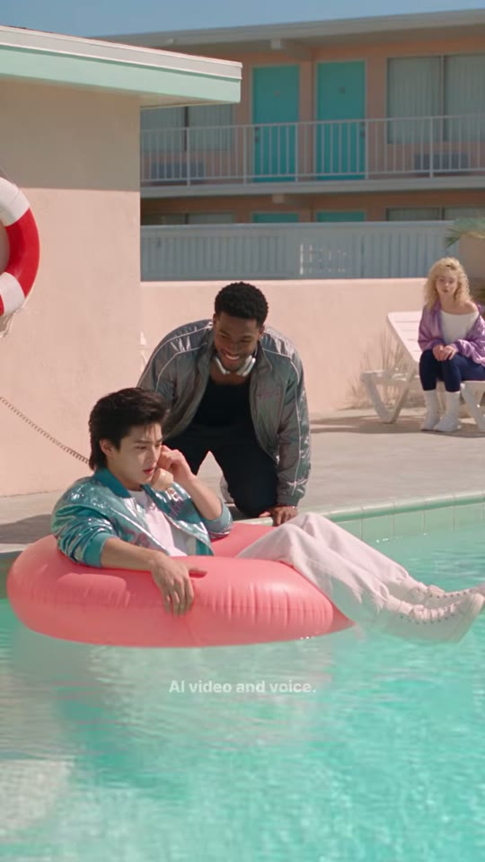
Neon Showbiz : Twelve Towns — EP.4 : I Can't Swim!
조회수 1,743좋아요 14댓글 1업로드 2026-09-15길이 23.06초608x1080 · 24fps · 9:16 · -21.0 LUFS (LRA 6.9) · 무음 구간 0.46~1.72 / 7.17~7.65 / 14.92~15.35초
80년대 파스텔 모텔 수영장에서 '수영 못 해'를 말하려던 소년이 누나에게 'I don't swim'이라는 틀린 문장을 배워 외쳤다가 깊은 물로 떠밀리고, 'I can't swim!'을 배우자 바로 구조되는 23초 영어 미니드라마.
🔥 떡상 이유
- 80년대 파스텔 미장센(살몬 핑크 모텔·청록 수영장·핑크 튜브·메탈릭 새틴 재킷) — 첫 프레임부터 색감 자체가 썸네일급 '아이 캔디'로 스크롤을 멈춤
- 색 코딩 자막: 오답 빨강 #D40820 / 정답 노랑 #F0F820 — 신호등처럼 틀림과 맞음이 0.2초 안에 구분되는 시각 학습(듀얼 코딩)
- 오답의 물리적 대가 — 'I don't swim'(안 하는 것)을 '오늘은 해!'로 받아쳐 깊은 물로 밀어버림. 문법 차이가 곧 사건이 되는 상황 개그
- 정적 비트(무음 0.43초 후 ECU 'I can't swim!') — 소리의 빈자리가 다음 대사를 강조하는 드라마틱 포즈
- 빈칸 퀴즈 'I ____ swim!' 두 번 — 시청자가 속으로 정답을 말하게 해 참여·재시청 유도
- 정답 = 즉시 구조(로키의 'Can't?! Hold on, kid!') — 올바른 문장이 결과를 바꾸는 게임형 보상
- 시리즈 시그니처 엔딩 — 오답을 준 누나가 무표정 대칭 ECU로 '...That's what I meant' (EP.2와 같은 대사) → 채널 반복 개그·루프
hook0~1.6초 대사 없는 파스텔 모텔 풀 와이드(튜브+전화+웃는 로키) → 1.9초 'Noona— what do I say?'로 질문 던지기
conflict누나의 오답 'I don't swim'(빨강) → 소년이 수화기 던지며 당당히 외침 → 로키 'Don't? Today you do!' → 튜브를 깊은 곳으로 밀어버림
payoff컬리 소녀가 달려와 'Say— I can't swim!'(노랑) → 소년 따라하기 → 빈칸 퀴즈 2회 → 로키 'Can't?! Hold on, kid!' 구조봉으로 구출
loop무관한 장소(가게)의 누나 대칭 ECU '...That's what I meant'로 공 가로채기 반전 후 하드 엔드. 채널 공통 엔딩 대사로 시리즈 정주행 유도
⏱ 편집 리듬
컷 수13평균 컷 길이1.77최단/최장0.92 / 3.79분당 컷33.8해석도입 1.63초 무언 와이드 → 3.79초 긴 설명 컷(질문) → 1.5~2.5초 대화·사건 → 퀴즈 구간 1.25/1.21/0.92/1.04초 초고속 핑퐁 → 2.25초 구조 → 1.47초 펀치라인. 무음 3곳(시작·오답 직후·정답 직전)이 리듬의 쉼표 역할. 대사는 컷 후 0.05~0.3초 시작(스피커 온 컷), 자막은 컷과 동시에 사라짐.
🎨 스타일 바이블
룩실사 시네마틱(AI 생성, Seedance 2.5 추정 — #seedance25 #higgsfieldai). 1980년대 파스텔 레트로(모텔·새틴 트랙재킷·곱슬 펌·코드 전화기), 하이키 소프트 콘트라스트, 리프트된 블랙조명야외: 한낮 강한 캘리포니아 직사광(탑라이트, 짧은 그림자, 물 반사 반짝임). 실내 가게: 따뜻한 형광+핑크·시안 네온 무지개 역광 글로우. 전체적으로 밝고 그늘에도 디테일 살아 있음색#F2C4B0 살몬 핑크 스투코 · #7FE0D4 터쿼이즈 수영장 물 · #F07A8A 핑크 튜브 · #2FA3A8 메탈릭 틸 재킷 · #B9A6E0 라일락 재킷/안경 · #FF5FA2/#5FE8FF 네온 핑크·시안렌즈와이드 28~35mm 상당(수면 높이), MS 35~50mm, ECU는 광각 초근접(얼굴이 렌즈에 가까워 약간 왜곡, 추정). f/2.8 전후 중간 심도세트① 80년대 2층 살몬 핑크 모텔 수영장(틸 도어·흰 난간·민트 차양·흰 선베드·빨강/흰 구명튜브·벽걸이 베이지 전화기+긴 코일 코드·야자수) ② 모텔 가게 카운터(핑크·시안 네온 무지개, 파스텔 상품 선반, 빈티지 금전등록기, 베이지 버튼식 전화)자막 스타일Montserrat ExtraBold 계열 굵은 산세리프(추정), 흰색, 약 38px@1080, 어두운 외곽선+그림자, 가로 중앙, 세로 위치는 컷마다 화자의 입/턱 바로 아래로 이동(32~72%). 오답 단어 빨강 #D40820, 정답 단어 노랑 #F0F820, 빈칸 '____' 노랑. 애니메이션 없는 팝 온/오프. 하단 세로 79.5%에 'AI video and voice.' 14px 흰색 70% 상시워터마크오버레이 로고 없음. 월드 내 라일락 'vkki' 자수: 소년 틸 재킷 가슴, 로키 은색 재킷 왼쪽 가슴, 누나 파란 앞치마 가슴. 하단 'AI video and voice.' 고지 상시
소년(이름 미상, 누나를 'Noona'라 부름) — 학습자. 19세 전후 동아시아 청년, 풍성한 80s 멀릿 흑갈색 머리. 메탈릭 틸 새틴 봄버(가슴 라일락 vkki 자수), 흰 티, 흰 배기 트랙팬츠, 흰 운동화. 핑크 튜브에 누워 있음
캐릭터 시트 프롬프트Character sheet, photoreal, full body front / 3-quarter / face close-up, a handsome East Asian young man about 19 with voluminous feathered dark-brown 80s mullet hair, wearing a shiny metallic teal satin bomber jacket with lilac 'vkki' embroidery on the chest, plain white T-shirt, baggy white track pants and white sneakers, neutral pastel pink background, bright sun, 9:16
동물 버전 캐릭터Character sheet, photoreal anthropomorphic animal, full body front / 3-quarter / face close-up, Hamjji, an anthropomorphic golden Syrian hamster (orange-gold and white fur, round cheeks, tiny pink paws) wearing a shiny metallic teal satin bomber jacket with lilac 'vkki' embroidery, white T-shirt and baggy white track pants, big glossy black eyes, neutral pastel pink background, 9:16
로키(Rocky) — 장난꾸러기 친구→구조자. 20대 초반 흑인 청년, 짧은 곱슬 흑발, 은회색 새틴 트랙재킷(흰 파이핑·왼쪽 가슴 vkki), 검정 탱크톱, 목에 은색 헤드폰, 차콜 트랙팬츠, 은색 팔찌. 늘 싱글벙글
캐릭터 시트 프롬프트Character sheet, photoreal, full body front / 3-quarter / face close-up, Rocky, a tall friendly Black young man in his early 20s with short curly black hair, wearing a silver-grey satin track jacket with white piping and lilac 'vkki' embroidery on the left chest, black tank top, silver over-ear headphones around his neck, charcoal track pants, silver bracelet, friendly grin, neutral pastel pink background, 9:16
동물 버전 캐릭터Character sheet, photoreal anthropomorphic animal, full body front / 3-quarter / face close-up, Rocky, a big fluffy friendly orange Maine Coon cat with a broad chest and tufted ears, wearing a silver-grey satin track jacket with white piping and lilac 'vkki' embroidery, black tank top and silver over-ear headphones around his neck, friendly grin, neutral pastel pink background, 9:16
컬리 소녀(이름 미상) — 정답 선생님 역. 풍성한 금발 80s 곱슬 펌, 라일락 투명 둥근 안경, 파란 눈, 라일락 새틴 봄버, 흰 오프숄더 톱, 네이비 레깅스, 흰 슬라우치 삭스+운동화. 밝고 적극적
캐릭터 시트 프롬프트Character sheet, photoreal, full body front / 3-quarter / face close-up, a young European woman with huge voluminous curly platinum-blonde 80s perm hair, clear lilac round translucent-frame glasses, blue eyes, lilac-purple satin bomber jacket, white off-shoulder slouchy top, navy leggings, white slouch socks and white sneakers, bright helpful smile, neutral pastel pink background, 9:16
동물 버전 캐릭터Character sheet, photoreal anthropomorphic animal, full body front / 3-quarter / face close-up, Coco, a cream-colored curly-coated Selkirk Rex cat with blue eyes and a fluffy curly mane, wearing clear lilac round glasses, a lilac satin bomber jacket, white off-shoulder top, navy leggings and white slouch socks, bright helpful smile, neutral pastel pink background, 9:16
누나(Noona) — 트러블 메이커(오답 제공)·엔딩 펀치라인 담당. 긴 검은 웨이브 가르마 머리, 큰 금색 후프, 흰 반팔 블라우스+로열 블루 앞치마(vkki 자수). 가게 카운터에서 전화 받음. 무표정 능청
캐릭터 시트 프롬프트Character sheet, photoreal, full body front / 3-quarter / face close-up, Noona, an early-20s East Asian woman with long wavy black center-part hair and big gold hoop earrings, white short-sleeve collarless blouse under a royal-blue work apron with lilac 'vkki' embroidery, deadpan expression, pink-cyan neon glow background, 9:16
동물 버전 캐릭터Character sheet, photoreal anthropomorphic animal, full body front / 3-quarter / face close-up, Nabi-noona, an anthropomorphic long-haired black cat with amber eyes and big gold hoop earrings, wearing a white short-sleeve blouse under a royal-blue work apron with lilac 'vkki' embroidery, deadpan slow blink, pink-cyan neon glow background, 9:16
🔊 오디오
목소리AI 보이스(화면 고지 'AI video and voice.'). 소년: 약간 징징대는 청년 톤→당당→겁먹음. 누나: 심드렁·능청 여성 톤. 로키: 따뜻하고 장난스러운 남성 저음. 컬리 소녀: 밝고 또박또박한 여성 톤. 미국식 영어, 학습용 느린 발화BGM없음(추정) — 무음 구간 RMS -46dB, 대사 사이 공백이 그대로 들림. 풀 앰비언스(물 찰랑임)만 아주 낮게. 리메이크 시 80s 신스팝 베드를 -30dB 이하로 선택 추가효과음0.00~1.63 풀 물결 앰비언스(무음에 가까움)
7.6~8.2 수화기 던짐+코일 코드 흔들림(추정)
10.9~11.6 튜브 밀리는 물 첨벙(추정)
12.0~14.4 정적(RMS -32~-44dB)
14.92~15.35 무음 비트
20.0~21.0 금속 구조봉 소리·물 튀김(추정)라우드니스-21.0TTS 팁'Noona—' 뒤 0.4초 쉼. 'Easy.' 뒤 0.3초 쉼 후 'I don't swim'은 인용하듯 평평하게. 소년의 'I don't swim!'은 +2dB 당당하게. 로키 'Don't?'는 올라가는 억양, 'Today you do!'는 웃음 섞어. 컬리 소녀 'I can't swim!'은 'can't'에 강세·속도 0.85배, 앞에 0.43초 무음(숨). 로키 'Can't?!'는 놀람 +3dB, 0.2초 후 'Hold on, kid!' 빠르게. 누나 엔딩은 -2dB 무표정. 보이스 4종을 minimax-h3 프리셋/pollo_clone_voice로 고정해 EP 간 일관성 유지(누나 보이스는 EP.2와 동일 권장)
BGM 생성 프롬프트Optional bed only (original has no music): light retro 1980s synth-pop poolside groove, soft analog synth pads, gentle gated drum machine, bright chorus guitar plucks, 105 BPM, sunny and playful, very low dynamics under dialogue, drops out completely at 12 s and 14.9 s for silent beats, instrumental, no vocals, 23 seconds
🎬 컷별 완전 분해 (13개)
컷 1 · 훅 — 80년대 파스텔 모텔 풀 한 장으로 세계관+상황(물에 들어가라는 압박) 1.6초 제시
0.0s → 1.63s (1.63s)
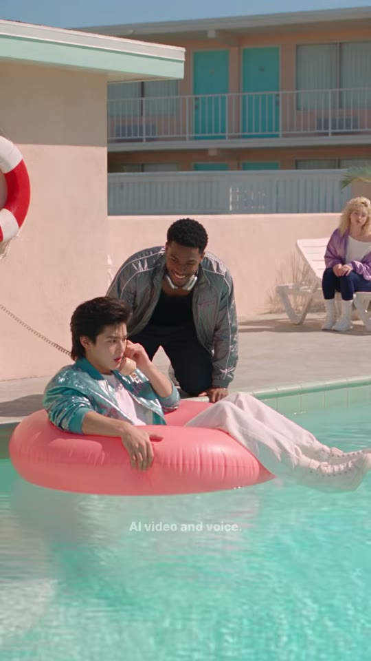
소년+튜브
로키
컬리 소녀
구명튜브
샷WS앵글아이레벨(수면 바로 위 높이)카메라고정구도하단 좌측 핑크 튜브에 누운 소년(수화기 귀에 댐), 그 뒤 풀 가장자리에 무릎 꿇은 로키가 싱글벙글, 우측 배경 선베드에 앉은 컬리 소녀. 상단 40%는 모텔 2층 건물+하늘, 하단 30%는 청록 물. 좌측 벽에 빨강·흰 구명튜브.동작소년이 튜브에 누워 긴 코드 전화 수화기를 귀에 대고 곤란한 표정, 로키는 튜브 옆에서 웃으며 지켜봄(물에 넣으려는 속셈). 컬리는 선베드에서 관망.대사(대사 없음 — 0.46~1.72초 무음 구간)화면 자막(자막 없음) 하단 'AI video and voice.'만들어오는 전환영상 시작(0프레임부터 풀 이미지)효과음/음악거의 무음(RMS -41~-46dB), 물소리 앰비언스만(추정)역할훅 — 80년대 파스텔 모텔 풀 한 장으로 세계관+상황(물에 들어가라는 압박) 1.6초 제시
1순위
veo-3-1물결·햇빛 반사·다인물 와이드 물리 표현 강함
2순위
seedance-2-5원본 모델(추정) — 룩 일치
3순위
kling-v3고정 카메라 환경 안정성
① 이미지 프롬프트 (원본 클론)photoreal cinematic live-action still, 9:16 vertical 608x1080, 1980s retro pastel aesthetic, bright hard midday California sun, high-key soft-contrast grading with lifted blacks, shot on 35-50mm full-frame lens, f/2.8, subtle film grain, Korean-drama beauty skin. Wide shot at water level: a 1980s two-story salmon-pink stucco motel with teal doors and white railings, flat mint-green roof overhang, turquoise pool water, pale concrete deck, white plastic sun loungers, a red-and-white life ring hanging on the pink wall, clear pale-blue sky, palm trees. Lower-left: a handsome East Asian young man about 19 with voluminous feathered dark-brown 80s mullet hair, wearing a shiny metallic teal satin bomber jacket with lilac 'vkki' embroidery on the chest, plain white T-shirt, baggy white track pants and white sneakers, lounging in a large glossy pink inflatable ring floating near the pool edge, holding a beige corded telephone receiver to his ear, legs draped over the ring, worried face. Behind him on the deck: Rocky, a tall friendly Black young man in his early 20s with short curly black hair, wearing a silver-grey satin track jacket with white piping and lilac 'vkki' embroidery on the left chest, black tank top, silver over-ear headphones around his neck, charcoal track pants, silver bracelet, kneeling and grinning down at him. Background right: a young European woman with huge voluminous curly platinum-blonde 80s perm hair, clear lilac round translucent-frame glasses, blue eyes, lilac-purple satin bomber jacket, white off-shoulder slouchy top, navy leggings, white slouch socks and white sneakers, sitting on a white lounger, watching.
② 영상 프롬프트 (원본 클론)Static camera, 1.6 seconds. Gentle water ripples and sun sparkles, the boy shifts uneasily in the pink ring with the phone at his ear, Rocky kneels grinning, the girl on the lounger watches. No dialogue, only faint pool ambience.
③ 동물 버전 이미지 프롬프트photoreal cinematic still of anthropomorphic animal actors, soft realistic fur, expressive large eyes, 9:16 vertical 608x1080, 1980s retro pastel aesthetic, bright hard midday California sun, high-key soft-contrast grading, 35-50mm lens f/2.8, subtle film grain, props scaled to animal size. Wide shot at water level: a 1980s two-story salmon-pink stucco motel with teal doors and white railings, flat mint-green roof overhang, turquoise pool water, pale concrete deck, white plastic sun loungers, a red-and-white life ring hanging on the pink wall, clear pale-blue sky, palm trees, scaled for small animals. Lower-left: Hamjji, an anthropomorphic golden Syrian hamster (orange-gold and white fur, round cheeks, tiny pink paws) wearing a shiny metallic teal satin bomber jacket with lilac 'vkki' embroidery, white T-shirt and baggy white track pants, lounging in a small glossy pink inflatable ring holding a tiny beige corded phone receiver to his ear, worried. Behind on the deck: Rocky, a big fluffy friendly orange Maine Coon cat with a broad chest and tufted ears, wearing a silver-grey satin track jacket with white piping and lilac 'vkki' embroidery, black tank top and silver over-ear headphones around his neck, kneeling and grinning. Background right: Coco, a cream-colored curly-coated Selkirk Rex cat with blue eyes and a fluffy curly mane, wearing clear lilac round glasses, a lilac satin bomber jacket, white off-shoulder top, navy leggings and white slouch socks on a white lounger.
④ 동물 버전 영상 프롬프트Static camera, 1.6 seconds. Water ripples, the hamster fidgets in the pink ring holding the phone, the Maine Coon grins with tail swishing, the curly cat watches from the lounger. No dialogue.
네거티브random text, subtitles, captions, letters on screen, watermark overlay, logo overlay, extra fingers, fused fingers, deformed hands, warped face, asymmetrical eyes, lip-sync drift, mouth moving without audio, flicker, morphing background, identity change between frames, duplicate characters, cartoon, anime, 3D render look, plastic skin, horizontal 16:9 frame, letterbox, smartphone, modern cars, overcast sky, night, winter, gloomy desaturated grading, drowning, panic, real danger | ANIMAL: human characters, human faces, human hands, realistic human skin, random text, subtitles, captions, letters on screen, watermark overlay, logo overlay, extra fingers, fused fingers, deformed hands, warped face, asymmetrical eyes, lip-sync drift, mouth moving without audio, flicker, morphing background, identity change between frames, duplicate characters, cartoon, anime, 3D render look, plastic skin, horizontal 16:9 frame, letterbox, smartphone, modern cars, overcast sky, night, winter, gloomy desaturated grading, drowning, panic, real danger, creepy uncanny animal, distorted snout, extra limbs, extra tails, wet matted fur, mismatched fur color between shots
컷 2 · 문제 제시 — 전화로 누나에게 도움 요청(질문 던지기)
1.63s → 5.42s (3.79s)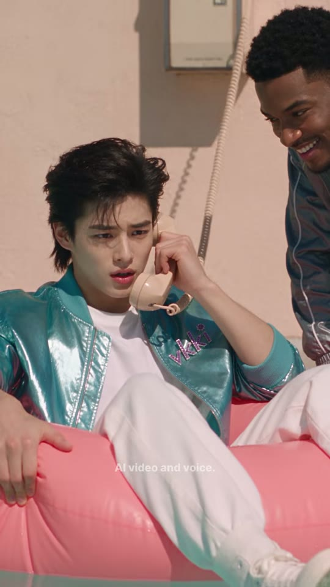


소년
벽걸이 전화기
로키(프레임 끝)
샷MS앵글살짝 하이앵글카메라고정(미세 핸드헬드 추정)구도소년 좌~중앙(얼굴 x19~58%, y23~51%), 튜브에 비스듬히 기대 한쪽 다리 튜브 위. 상단 중앙 벽에 베이지 벽걸이 전화기(x50~71%, y0~15%)와 늘어진 코일 코드. 우상단 프레임 끝에서 로키가 몸을 기울여 싱글벙글 들여다봄.동작소년이 수화기에 대고 눈썹을 찌푸리며 난감하게 '누나—, 로키가 나보고 풀에 들어오래… 뭐라고 해?' 말함. 로키는 옆에서 웃음.대사소년: "Noona— Rocky wants me in the pool... what do I say?" (자동자막: 'Duna, Rocky wants me in the pool. What do I say?')화면 자막"Noona —" (1.85~2.45) → "Rocky wants me in the pool..." (2.95~4.45) → "what do I say?" (4.50~5.42). 하이라이트 없음, 세로 약 56.5%들어오는 전환하드컷 — 와이드→MS 점프, 컷 후 0.3초 발화효과음/음악대사만(BGM 없음 추정)역할문제 제시 — 전화로 누나에게 도움 요청(질문 던지기)
1순위
minimax-h3대사 립싱크+음성 동시 생성, 무료 팀 기본
2순위
seedance-2-5원본 해시태그 #seedance25 — 동일 룩(추정)
3순위
kling-v3-omni레퍼런스 고정력 좋은 립싱크 대안
① 이미지 프롬프트 (원본 클론)photoreal cinematic live-action still, 9:16 vertical 608x1080, 1980s retro pastel aesthetic, bright hard midday California sun, high-key soft-contrast grading with lifted blacks, shot on 35-50mm full-frame lens, f/2.8, subtle film grain, Korean-drama beauty skin. Medium shot, slightly high angle: a handsome East Asian young man about 19 with voluminous feathered dark-brown 80s mullet hair, wearing a shiny metallic teal satin bomber jacket with lilac 'vkki' embroidery on the chest, plain white T-shirt, baggy white track pants and white sneakers, reclining in a glossy pink inflatable ring, one leg over the ring, holding a beige coiled-cord telephone receiver to his left ear with a troubled frown. Behind him a salmon-pink stucco wall with a beige wall-mounted telephone at top center, its long coiled cord hanging down. Upper-right edge: Rocky in a silver satin jacket leaning in, grinning.
② 영상 프롬프트 (원본 클론)Static camera, 3.8 seconds. He speaks into the receiver, worried and whiny, glancing sideways; Rocky grins at the frame edge. Lip-sync, young male voice, slightly nervous: "Noona... Rocky wants me in the pool... what do I say?"
③ 동물 버전 이미지 프롬프트photoreal cinematic still of anthropomorphic animal actors, soft realistic fur, expressive large eyes, 9:16 vertical 608x1080, 1980s retro pastel aesthetic, bright hard midday California sun, high-key soft-contrast grading, 35-50mm lens f/2.8, subtle film grain, props scaled to animal size. Medium shot, slightly high angle: Hamjji, an anthropomorphic golden Syrian hamster (orange-gold and white fur, round cheeks, tiny pink paws) wearing a shiny metallic teal satin bomber jacket with lilac 'vkki' embroidery, white T-shirt and baggy white track pants, reclining in a glossy pink ring, holding a tiny beige coiled-cord receiver to his ear with a troubled frown. Salmon-pink wall with a beige wall phone behind. Upper-right edge: the orange Maine Coon in a silver jacket leaning in, grinning.
④ 동물 버전 영상 프롬프트Static camera, 3.8 seconds. The hamster talks into the receiver, cheeks puffing, whiskers drooping, lip-synced nervous voice: "Noona... Rocky wants me in the pool... what do I say?" The Maine Coon grins at the edge.
네거티브random text, subtitles, captions, letters on screen, watermark overlay, logo overlay, extra fingers, fused fingers, deformed hands, warped face, asymmetrical eyes, lip-sync drift, mouth moving without audio, flicker, morphing background, identity change between frames, duplicate characters, cartoon, anime, 3D render look, plastic skin, horizontal 16:9 frame, letterbox, smartphone, modern cars, overcast sky, night, winter, gloomy desaturated grading, drowning, panic, real danger | ANIMAL: human characters, human faces, human hands, realistic human skin, random text, subtitles, captions, letters on screen, watermark overlay, logo overlay, extra fingers, fused fingers, deformed hands, warped face, asymmetrical eyes, lip-sync drift, mouth moving without audio, flicker, morphing background, identity change between frames, duplicate characters, cartoon, anime, 3D render look, plastic skin, horizontal 16:9 frame, letterbox, smartphone, modern cars, overcast sky, night, winter, gloomy desaturated grading, drowning, panic, real danger, creepy uncanny animal, distorted snout, extra limbs, extra tails, wet matted fur, mismatched fur color between shots
컷 3 · 트러블 메이커 — 오답(don't) 심기. 빨간색으로 '틀린 말' 시각 표시
5.42s → 7.54s (2.13s)


누나
네온 무지개
금전등록기
샷MS앵글정면 아이레벨카메라고정구도누나 중앙(얼굴 x29~62%, y16~40%), 카운터 뒤에서 수화기 들고 서 있음. 상단 우측 핑크+시안 네온 무지개(x41~100%, y3~19%), 뒤 선반에 파스텔 상품. 좌하단 빈티지 금전등록기(x0~36%, y68~90%), 카운터 위 베이지 전화기.동작심드렁하게 '쉬워~' 하고 눈을 감은 채 틀린 문장을 알려줌, 끝에 입술 오므린 능청 미소.대사누나: "Easy. 'I don't swim.'"화면 자막"Easy..." (5.45~6.20, 세로 39.5%) → "'I don't swim'" 중 'don't' 빨강 #D40820 (6.25~7.54, 세로 39.5%)들어오는 전환하드컷 — 통화 상대 컷백(크로스커팅)효과음/음악대사 후 7.17~7.65초 무음(다음 컷 직전 쉼)역할트러블 메이커 — 오답(don't) 심기. 빨간색으로 '틀린 말' 시각 표시
1순위
seedance-2-5원본 모델(추정) — 초근접 미세표정·눈 깜빡임
2순위
minimax-h3무료·오디오 포함 립싱크
3순위
kling-v3-omni얼굴 일관성+립싱크
① 이미지 프롬프트 (원본 클론)photoreal cinematic live-action still, 9:16 vertical 608x1080, 1980s retro pastel aesthetic, bright hard midday California sun, high-key soft-contrast grading with lifted blacks, shot on 35-50mm full-frame lens, f/2.8, subtle film grain, Korean-drama beauty skin, indoor warm-cool mix with neon glow. Frontal medium shot: Noona, an early-20s East Asian woman with long wavy black center-part hair and big gold hoop earrings, white short-sleeve collarless blouse under a royal-blue work apron with lilac 'vkki' embroidery, standing behind a pastel 1980s motel shop counter: a pink-and-cyan neon rainbow sign on the cream wall behind, shelves stacked with pink, teal and white packaged pool towels and floats, a vintage beige cash register on the left of the counter, a beige push-button desk phone with a coiled cord, holding the beige receiver to her ear with its coiled cord hanging, relaxed bored expression.
② 영상 프롬프트 (원본 클론)Static camera, 2.1 seconds. She shrugs casually, closes her eyes and advises with a lazy confident tone, then purses her lips smugly. Lip-sync, relaxed young female voice: "Easy. 'I don't swim.'"
③ 동물 버전 이미지 프롬프트photoreal cinematic still of anthropomorphic animal actors, soft realistic fur, expressive large eyes, 9:16 vertical 608x1080, 1980s retro pastel aesthetic, bright hard midday California sun, high-key soft-contrast grading, 35-50mm lens f/2.8, subtle film grain, props scaled to animal size, neon glow. Frontal medium shot: Nabi-noona, an anthropomorphic long-haired black cat with amber eyes and big gold hoop earrings, wearing a white short-sleeve blouse under a royal-blue work apron with lilac 'vkki' embroidery, standing behind a pastel 1980s motel shop counter: a pink-and-cyan neon rainbow sign on the cream wall behind, shelves stacked with pink, teal and white packaged pool towels and floats, a vintage beige cash register on the left of the counter, a beige push-button desk phone with a coiled cord scaled for animals, holding a beige receiver to her ear, bored.
④ 동물 버전 영상 프롬프트Static camera, 2.1 seconds. The black cat flicks an ear, closes her eyes and says lazily, lip-synced: "Easy. 'I don't swim.'" Ends with a smug slow blink.
네거티브random text, subtitles, captions, letters on screen, watermark overlay, logo overlay, extra fingers, fused fingers, deformed hands, warped face, asymmetrical eyes, lip-sync drift, mouth moving without audio, flicker, morphing background, identity change between frames, duplicate characters, cartoon, anime, 3D render look, plastic skin, horizontal 16:9 frame, letterbox, smartphone, modern cars, overcast sky, night, winter, gloomy desaturated grading, drowning, panic, real danger | ANIMAL: human characters, human faces, human hands, realistic human skin, random text, subtitles, captions, letters on screen, watermark overlay, logo overlay, extra fingers, fused fingers, deformed hands, warped face, asymmetrical eyes, lip-sync drift, mouth moving without audio, flicker, morphing background, identity change between frames, duplicate characters, cartoon, anime, 3D render look, plastic skin, horizontal 16:9 frame, letterbox, smartphone, modern cars, overcast sky, night, winter, gloomy desaturated grading, drowning, panic, real danger, creepy uncanny animal, distorted snout, extra limbs, extra tails, wet matted fur, mismatched fur color between shots
컷 4 · 오답 실행 — 당당함이 곧 사고를 부름(드라마틱 아이러니)
7.54s → 9.38s (1.83s)


소년
매달린 수화기
로키(끝)
샷MS앵글살짝 하이앵글(컷2와 같은 셋업, 약간 좌측)카메라고정구도소년 좌측(얼굴 x2~35%, y22~51%), 로키는 우상단 끝에 반쯤. 벽걸이 전화 코드에 수화기가 대롱대롱 매달림(x50~70%, y20~50%).동작자신만만하게 로키를 보며 'I don't swim!' 외치면서 수화기를 뒤로 휙 던져 버림 → 수화기가 코드에 매달려 흔들림. 턱 들고 당당한 표정.대사소년: "I don't swim!"화면 자막"I don't swim!" 중 'don't' 빨강 #D40820 (7.60~9.38, 세로 56%)들어오는 전환하드컷 (앞 컷 무음 꼬리 0.11초 후 컷)효과음/음악수화기 코드 흔들림·툭 소리(추정)역할오답 실행 — 당당함이 곧 사고를 부름(드라마틱 아이러니)
1순위
hailuo-2-3과장된 코믹 동작(수화기 던지기·튜브 밀기) 빠른 표현
2순위
seedance-2-5원본 모델(추정) + 대사 동시
3순위
minimax-h3립싱크 필요 시 무료 대안
① 이미지 프롬프트 (원본 클론)photoreal cinematic live-action still, 9:16 vertical 608x1080, 1980s retro pastel aesthetic, bright hard midday California sun, high-key soft-contrast grading with lifted blacks, shot on 35-50mm full-frame lens, f/2.8, subtle film grain, Korean-drama beauty skin. Medium shot, slightly high angle, same setup as before: a handsome East Asian young man about 19 with voluminous feathered dark-brown 80s mullet hair, wearing a shiny metallic teal satin bomber jacket with lilac 'vkki' embroidery on the chest, plain white T-shirt, baggy white track pants and white sneakers, in the pink inflatable ring, turning his head toward Rocky at the right with a proud confident face, his hand flinging the beige telephone receiver backward. Behind: salmon-pink wall, wall phone with the receiver dangling and swinging on its coiled cord.
② 영상 프롬프트 (원본 클론)Static camera, 1.8 seconds. He tosses the receiver over his shoulder, it bounces and swings on the coiled cord, he turns to Rocky and declares proudly with chin up. Lip-sync, confident young male voice: "I don't swim!"
③ 동물 버전 이미지 프롬프트photoreal cinematic still of anthropomorphic animal actors, soft realistic fur, expressive large eyes, 9:16 vertical 608x1080, 1980s retro pastel aesthetic, bright hard midday California sun, high-key soft-contrast grading, 35-50mm lens f/2.8, subtle film grain, props scaled to animal size. Medium shot, slightly high angle: Hamjji, an anthropomorphic golden Syrian hamster (orange-gold and white fur, round cheeks, tiny pink paws) wearing a shiny metallic teal satin bomber jacket with lilac 'vkki' embroidery, white T-shirt and baggy white track pants, in the pink ring, flinging the tiny receiver backward, proud chin-up face turned toward the right. Receiver dangling on a coiled cord against the pink wall.
④ 동물 버전 영상 프롬프트Static camera, 1.8 seconds. The hamster flings the receiver away, it swings on the cord, he puffs his chest and declares, lip-synced: "I don't swim!"
네거티브random text, subtitles, captions, letters on screen, watermark overlay, logo overlay, extra fingers, fused fingers, deformed hands, warped face, asymmetrical eyes, lip-sync drift, mouth moving without audio, flicker, morphing background, identity change between frames, duplicate characters, cartoon, anime, 3D render look, plastic skin, horizontal 16:9 frame, letterbox, smartphone, modern cars, overcast sky, night, winter, gloomy desaturated grading, drowning, panic, real danger | ANIMAL: human characters, human faces, human hands, realistic human skin, random text, subtitles, captions, letters on screen, watermark overlay, logo overlay, extra fingers, fused fingers, deformed hands, warped face, asymmetrical eyes, lip-sync drift, mouth moving without audio, flicker, morphing background, identity change between frames, duplicate characters, cartoon, anime, 3D render look, plastic skin, horizontal 16:9 frame, letterbox, smartphone, modern cars, overcast sky, night, winter, gloomy desaturated grading, drowning, panic, real danger, creepy uncanny animal, distorted snout, extra limbs, extra tails, wet matted fur, mismatched fur color between shots
컷 5 · 말장난 역이용 — don't(선택)라서 오늘은 해도 된다고 해석, 강제 입수 명분
9.38s → 10.92s (1.54s)
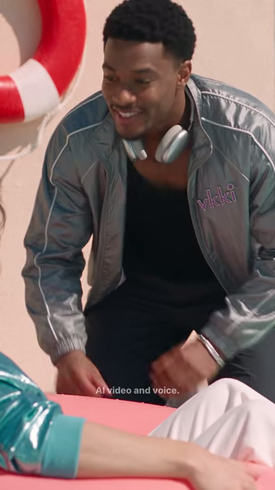

로키
구명튜브
소년 팔·튜브(전경)
샷MS앵글로우앵글(튜브에 누운 소년 시점)카메라고정구도로키가 풀 가장자리에 무릎 꿇고 상체를 숙여 중앙~우측(얼굴 x38~71%, y0~20%). 좌상단 빨강·흰 구명튜브, 핑크 벽. 하단 전경에 소년의 청록 소매·흰 바지·핑크 튜브 흐리게.동작로키가 짓궂게 웃으며 'Don't?' 되묻고 'Today you do!' 하며 두 손을 튜브에 올려 밀 준비.대사로키: "Don't? Today you do!"화면 자막"Don't?" 중 'Don't' 빨강 (9.45~9.95, 세로 36%) → "Today you do!" 흰색 (9.98~10.92, 세로 38.5%)들어오는 전환하드컷 — 리버스(소년 시점)효과음/음악대사만역할말장난 역이용 — don't(선택)라서 오늘은 해도 된다고 해석, 강제 입수 명분
1순위
minimax-h3대사 립싱크+음성 동시 생성, 무료 팀 기본
2순위
seedance-2-5원본 해시태그 #seedance25 — 동일 룩(추정)
3순위
kling-v3-omni레퍼런스 고정력 좋은 립싱크 대안
① 이미지 프롬프트 (원본 클론)photoreal cinematic live-action still, 9:16 vertical 608x1080, 1980s retro pastel aesthetic, bright hard midday California sun, high-key soft-contrast grading with lifted blacks, shot on 35-50mm full-frame lens, f/2.8, subtle film grain, Korean-drama beauty skin. Low-angle medium shot from the float's point of view: Rocky, a tall friendly Black young man in his early 20s with short curly black hair, wearing a silver-grey satin track jacket with white piping and lilac 'vkki' embroidery on the left chest, black tank top, silver over-ear headphones around his neck, charcoal track pants, silver bracelet, kneeling at the pool edge and leaning forward over the camera with a mischievous grin, both hands reaching down onto the pink float. A red-and-white life ring hangs on the salmon-pink wall at top-left. Blurred foreground: the boy's teal satin sleeve, white pants and the pink ring.
② 영상 프롬프트 (원본 클론)Static camera, 1.5 seconds. He tilts his head and repeats teasingly, then grins wider and plants both hands on the ring ready to push. Lip-sync, warm playful male voice: "Don't? Today you do!"
③ 동물 버전 이미지 프롬프트photoreal cinematic still of anthropomorphic animal actors, soft realistic fur, expressive large eyes, 9:16 vertical 608x1080, 1980s retro pastel aesthetic, bright hard midday California sun, high-key soft-contrast grading, 35-50mm lens f/2.8, subtle film grain, props scaled to animal size. Low-angle medium shot from the float's point of view: Rocky, a big fluffy friendly orange Maine Coon cat with a broad chest and tufted ears, wearing a silver-grey satin track jacket with white piping and lilac 'vkki' embroidery, black tank top and silver over-ear headphones around his neck, kneeling at the pool edge leaning over the camera with a mischievous grin, both big paws on the pink float. Red-and-white life ring on the pink wall top-left. Blurred foreground: hamster's teal sleeve and pink ring.
④ 동물 버전 영상 프롬프트Static camera, 1.5 seconds. The Maine Coon tilts his head, ears forward, repeats teasingly, then grins and puts both paws on the ring, lip-synced: "Don't? Today you do!"
네거티브random text, subtitles, captions, letters on screen, watermark overlay, logo overlay, extra fingers, fused fingers, deformed hands, warped face, asymmetrical eyes, lip-sync drift, mouth moving without audio, flicker, morphing background, identity change between frames, duplicate characters, cartoon, anime, 3D render look, plastic skin, horizontal 16:9 frame, letterbox, smartphone, modern cars, overcast sky, night, winter, gloomy desaturated grading, drowning, panic, real danger | ANIMAL: human characters, human faces, human hands, realistic human skin, random text, subtitles, captions, letters on screen, watermark overlay, logo overlay, extra fingers, fused fingers, deformed hands, warped face, asymmetrical eyes, lip-sync drift, mouth moving without audio, flicker, morphing background, identity change between frames, duplicate characters, cartoon, anime, 3D render look, plastic skin, horizontal 16:9 frame, letterbox, smartphone, modern cars, overcast sky, night, winter, gloomy desaturated grading, drowning, panic, real danger, creepy uncanny animal, distorted snout, extra limbs, extra tails, wet matted fur, mismatched fur color between shots
컷 6 · 결과(위기) — 오답의 대가가 물리적으로 발생(깊은 물로 떠밀림)
10.92s → 13.42s (2.5s)

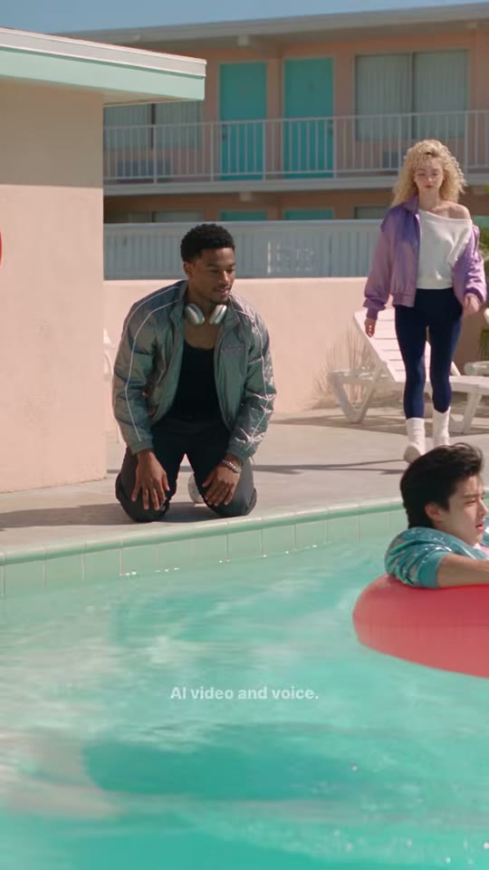
로키
소년+튜브(이동)
컬리 소녀(이동)
샷WS앵글아이레벨(컷1과 동일 셋업)카메라고정구도컷1 와이드 재사용. 로키(x21~50%, y34~59%)가 튜브를 밀어 소년+튜브가 화면 우하단(깊은 쪽)으로 미끄러져 나감. 우측 배경 컬리 소녀가 선베드에서 일어나 풀 쪽으로 뛰어옴(끝 프레임 x73~94%, y16~51%).동작로키가 튜브를 힘껏 밀자 소년이 둥실 떠밀려 깊은 곳으로 → 로키는 무릎 꿇고 흐뭇. 컬리 소녀가 급히 일어나 달려옴.대사(대사 없음)화면 자막(자막 없음)들어오는 전환하드컷 — 와이드로 결과 확인효과음/음악물 밀리는 첨벙 소리, 이후 정적(12~14.4초 RMS -32~-44dB)역할결과(위기) — 오답의 대가가 물리적으로 발생(깊은 물로 떠밀림)
1순위
veo-3-1물결·햇빛 반사·다인물 와이드 물리 표현 강함
2순위
seedance-2-5원본 모델(추정) — 룩 일치
3순위
kling-v3고정 카메라 환경 안정성
① 이미지 프롬프트 (원본 클론)photoreal cinematic live-action still, 9:16 vertical 608x1080, 1980s retro pastel aesthetic, bright hard midday California sun, high-key soft-contrast grading with lifted blacks, shot on 35-50mm full-frame lens, f/2.8, subtle film grain, Korean-drama beauty skin. Same wide shot at water level as the opening: a 1980s two-story salmon-pink stucco motel with teal doors and white railings, flat mint-green roof overhang, turquoise pool water, pale concrete deck, white plastic sun loungers, a red-and-white life ring hanging on the pink wall, clear pale-blue sky, palm trees. Rocky, a tall friendly Black young man in his early 20s with short curly black hair, wearing a silver-grey satin track jacket with white piping and lilac 'vkki' embroidery on the left chest, black tank top, silver over-ear headphones around his neck, charcoal track pants, silver bracelet kneeling at the pool edge having just pushed the pink inflatable ring; a handsome East Asian young man about 19 with voluminous feathered dark-brown 80s mullet hair, wearing a shiny metallic teal satin bomber jacket with lilac 'vkki' embroidery on the chest, plain white T-shirt, baggy white track pants and white sneakers reclining in the ring as it glides away toward the deep end at lower right. Background right: a young European woman with huge voluminous curly platinum-blonde 80s perm hair, clear lilac round translucent-frame glasses, blue eyes, lilac-purple satin bomber jacket, white off-shoulder slouchy top, navy leggings, white slouch socks and white sneakers getting up from the white lounger.
② 영상 프롬프트 (원본 클론)Static camera, 2.5 seconds. Rocky gives the pink ring a firm push, the boy drifts away across the turquoise water toward the lower-right edge of frame leaving a wake, Rocky stays kneeling, satisfied. The curly-haired girl stands up and jogs toward the pool. Water splash then quiet ambience. No dialogue.
③ 동물 버전 이미지 프롬프트photoreal cinematic still of anthropomorphic animal actors, soft realistic fur, expressive large eyes, 9:16 vertical 608x1080, 1980s retro pastel aesthetic, bright hard midday California sun, high-key soft-contrast grading, 35-50mm lens f/2.8, subtle film grain, props scaled to animal size. Same wide shot: a 1980s two-story salmon-pink stucco motel with teal doors and white railings, flat mint-green roof overhang, turquoise pool water, pale concrete deck, white plastic sun loungers, a red-and-white life ring hanging on the pink wall, clear pale-blue sky, palm trees scaled for animals. Rocky, a big fluffy friendly orange Maine Coon cat with a broad chest and tufted ears, wearing a silver-grey satin track jacket with white piping and lilac 'vkki' embroidery, black tank top and silver over-ear headphones around his neck kneeling at the edge having pushed the pink ring; Hamjji, an anthropomorphic golden Syrian hamster (orange-gold and white fur, round cheeks, tiny pink paws) wearing a shiny metallic teal satin bomber jacket with lilac 'vkki' embroidery, white T-shirt and baggy white track pants drifting away in the ring toward the deep end at lower right. Background right: Coco, a cream-colored curly-coated Selkirk Rex cat with blue eyes and a fluffy curly mane, wearing clear lilac round glasses, a lilac satin bomber jacket, white off-shoulder top, navy leggings and white slouch socks jumping off the lounger.
④ 동물 버전 영상 프롬프트Static camera, 2.5 seconds. The Maine Coon pushes the ring, the hamster drifts away leaving a wake, paws gripping the ring; the curly cat scampers toward the pool. Splash then quiet. No dialogue.
네거티브random text, subtitles, captions, letters on screen, watermark overlay, logo overlay, extra fingers, fused fingers, deformed hands, warped face, asymmetrical eyes, lip-sync drift, mouth moving without audio, flicker, morphing background, identity change between frames, duplicate characters, cartoon, anime, 3D render look, plastic skin, horizontal 16:9 frame, letterbox, smartphone, modern cars, overcast sky, night, winter, gloomy desaturated grading, drowning, panic, real danger | ANIMAL: human characters, human faces, human hands, realistic human skin, random text, subtitles, captions, letters on screen, watermark overlay, logo overlay, extra fingers, fused fingers, deformed hands, warped face, asymmetrical eyes, lip-sync drift, mouth moving without audio, flicker, morphing background, identity change between frames, duplicate characters, cartoon, anime, 3D render look, plastic skin, horizontal 16:9 frame, letterbox, smartphone, modern cars, overcast sky, night, winter, gloomy desaturated grading, drowning, panic, real danger, creepy uncanny animal, distorted snout, extra limbs, extra tails, wet matted fur, mismatched fur color between shots
컷 7 · 정답 선생님 등장 — 반전 준비
13.42s → 14.92s (1.5s)


컬리 소녀
소년(전경)
샷MS앵글로우앵글(수면 높이)카메라고정구도좌하단 전경에 튜브 속 소년 머리·어깨(x0~30%, y51~100%, 흐림), 중앙~우측에 컬리 소녀가 달려와 풀 가장자리에 네 발로 엎드리듯 무릎 꿇음(x20~100%, y0~81%). 배경 핑크 벽·모텔.동작컬리 소녀가 뛰어 들어와 손바닥을 바닥에 짚고 몸을 숙여 소년에게 '말해 봐—'.대사컬리 소녀: "Say—"화면 자막"Say —" 흰색 (14.35~14.92, 세로 32.5%)들어오는 전환하드컷 — 새 인물 등장(구원자)효과음/음악대사 후 14.92~15.35 무음(다음 컷의 숨 들이쉼 연결)역할정답 선생님 등장 — 반전 준비
1순위
hailuo-2-3과장된 코믹 동작(수화기 던지기·튜브 밀기) 빠른 표현
2순위
seedance-2-5원본 모델(추정) + 대사 동시
3순위
minimax-h3립싱크 필요 시 무료 대안
① 이미지 프롬프트 (원본 클론)photoreal cinematic live-action still, 9:16 vertical 608x1080, 1980s retro pastel aesthetic, bright hard midday California sun, high-key soft-contrast grading with lifted blacks, shot on 35-50mm full-frame lens, f/2.8, subtle film grain, Korean-drama beauty skin. Low-angle medium shot from water level: a young European woman with huge voluminous curly platinum-blonde 80s perm hair, clear lilac round translucent-frame glasses, blue eyes, lilac-purple satin bomber jacket, white off-shoulder slouchy top, navy leggings, white slouch socks and white sneakers, rushing in and dropping onto her hands and knees at the pool edge, leaning toward the camera with an eager helpful face. Blurred foreground lower-left: the boy's head and teal satin shoulder in the pink ring. Background: salmon-pink wall and motel balconies.
② 영상 프롬프트 (원본 클론)Static camera, 1.5 seconds. She jogs into frame, drops to her hands and knees at the edge, leans in and starts to coach. Lip-sync, bright young female voice: "Say—"
③ 동물 버전 이미지 프롬프트photoreal cinematic still of anthropomorphic animal actors, soft realistic fur, expressive large eyes, 9:16 vertical 608x1080, 1980s retro pastel aesthetic, bright hard midday California sun, high-key soft-contrast grading, 35-50mm lens f/2.8, subtle film grain, props scaled to animal size. Low-angle medium shot from water level: Coco, a cream-colored curly-coated Selkirk Rex cat with blue eyes and a fluffy curly mane, wearing clear lilac round glasses, a lilac satin bomber jacket, white off-shoulder top, navy leggings and white slouch socks, rushing in and crouching on all fours at the pool edge, leaning toward the camera eagerly. Blurred foreground lower-left: hamster's head in the pink ring.
④ 동물 버전 영상 프롬프트Static camera, 1.5 seconds. The curly cat scampers in, crouches at the edge, leans forward with ears up, lip-synced bright voice: "Say—"
네거티브random text, subtitles, captions, letters on screen, watermark overlay, logo overlay, extra fingers, fused fingers, deformed hands, warped face, asymmetrical eyes, lip-sync drift, mouth moving without audio, flicker, morphing background, identity change between frames, duplicate characters, cartoon, anime, 3D render look, plastic skin, horizontal 16:9 frame, letterbox, smartphone, modern cars, overcast sky, night, winter, gloomy desaturated grading, drowning, panic, real danger | ANIMAL: human characters, human faces, human hands, realistic human skin, random text, subtitles, captions, letters on screen, watermark overlay, logo overlay, extra fingers, fused fingers, deformed hands, warped face, asymmetrical eyes, lip-sync drift, mouth moving without audio, flicker, morphing background, identity change between frames, duplicate characters, cartoon, anime, 3D render look, plastic skin, horizontal 16:9 frame, letterbox, smartphone, modern cars, overcast sky, night, winter, gloomy desaturated grading, drowning, panic, real danger, creepy uncanny animal, distorted snout, extra limbs, extra tails, wet matted fur, mismatched fur color between shots
컷 8 · 정답 제시(학습 핵심 문장)
14.92s → 16.17s (1.25s)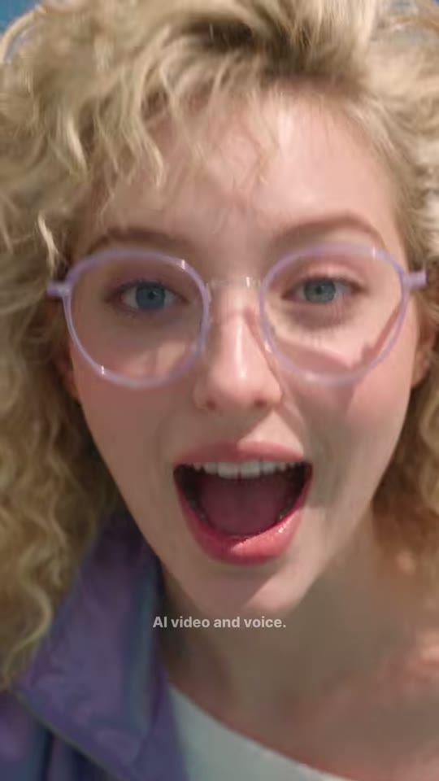
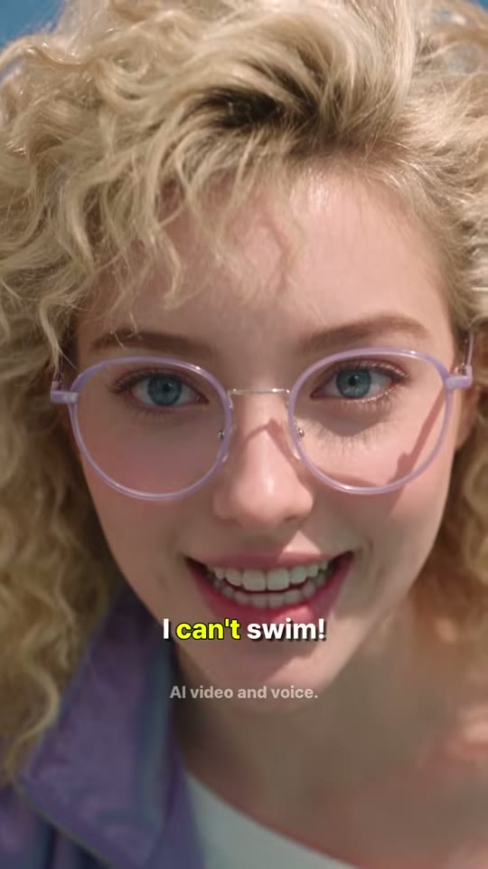
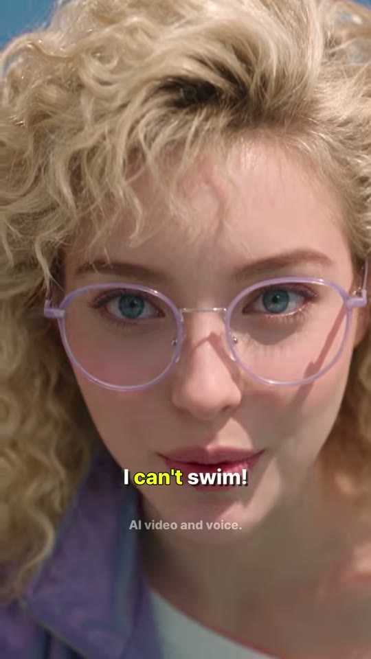
컬리 소녀 얼굴
샷ECU앵글정면 약간 하이앵글(광각 초근접, 카메라에 얼굴 들이밈)카메라고정구도얼굴이 프레임 전체(이마 윗부분 잘림). 눈이 y35~50%, 입 y60~70%, 자막은 입 바로 아래 72%. 라일락 투명 안경, 풍성한 금발 곱슬.동작입을 크게 벌려 숨을 들이쉬었다가(무음 0.43초) 또박또박 정답 'I can't swim!', 활짝 웃음.대사컬리 소녀: "I can't swim!"화면 자막"I can't swim!" 중 'can't' 노랑 #F0F820 (15.45~16.17, 세로 72%)들어오는 전환하드컷 — 무음 비트 위 컷(드라마틱 포즈)효과음/음악0.43초 정적 후 대사역할정답 제시(학습 핵심 문장)
1순위
seedance-2-5원본 모델(추정) — 초근접 미세표정·눈 깜빡임
2순위
minimax-h3무료·오디오 포함 립싱크
3순위
kling-v3-omni얼굴 일관성+립싱크
① 이미지 프롬프트 (원본 클론)photoreal cinematic live-action still, 9:16 vertical 608x1080, 1980s retro pastel aesthetic, bright hard midday California sun, high-key soft-contrast grading with lifted blacks, shot on 35-50mm full-frame lens, f/2.8, subtle film grain, Korean-drama beauty skin. Extreme close-up, wide lens very close, slightly high angle: face of a young European woman with huge voluminous curly platinum-blonde 80s perm hair, clear lilac round translucent-frame glasses, blue eyes, lilac-purple satin bomber jacket, white off-shoulder slouchy top, navy leggings, white slouch socks and white sneakers, filling the frame, blue eyes behind clear lilac round glasses, mouth wide open mid-breath, huge curly blonde hair backlit by the sun, lilac satin collar at bottom.
② 영상 프롬프트 (원본 클론)Static camera, 1.25 seconds. She takes a big breath with mouth open, then says clearly and slowly with a big bright smile. Lip-sync, cheerful clear young female voice: "I can't swim!"
③ 동물 버전 이미지 프롬프트photoreal cinematic still of anthropomorphic animal actors, soft realistic fur, expressive large eyes, 9:16 vertical 608x1080, 1980s retro pastel aesthetic, bright hard midday California sun, high-key soft-contrast grading, 35-50mm lens f/2.8, subtle film grain, props scaled to animal size. Extreme close-up, wide lens very close: face of Coco, a cream-colored curly-coated Selkirk Rex cat with blue eyes and a fluffy curly mane, wearing clear lilac round glasses, a lilac satin bomber jacket, white off-shoulder top, navy leggings and white slouch socks, filling the frame, blue eyes behind clear lilac round glasses, mouth open, curly cream fur backlit by the sun.
④ 동물 버전 영상 프롬프트Static camera, 1.25 seconds. The curly cat inhales with mouth open then says clearly with a big smile, whiskers up, lip-synced: "I can't swim!"
네거티브random text, subtitles, captions, letters on screen, watermark overlay, logo overlay, extra fingers, fused fingers, deformed hands, warped face, asymmetrical eyes, lip-sync drift, mouth moving without audio, flicker, morphing background, identity change between frames, duplicate characters, cartoon, anime, 3D render look, plastic skin, horizontal 16:9 frame, letterbox, smartphone, modern cars, overcast sky, night, winter, gloomy desaturated grading, drowning, panic, real danger | ANIMAL: human characters, human faces, human hands, realistic human skin, random text, subtitles, captions, letters on screen, watermark overlay, logo overlay, extra fingers, fused fingers, deformed hands, warped face, asymmetrical eyes, lip-sync drift, mouth moving without audio, flicker, morphing background, identity change between frames, duplicate characters, cartoon, anime, 3D render look, plastic skin, horizontal 16:9 frame, letterbox, smartphone, modern cars, overcast sky, night, winter, gloomy desaturated grading, drowning, panic, real danger, creepy uncanny animal, distorted snout, extra limbs, extra tails, wet matted fur, mismatched fur color between shots
컷 9 · 반복 학습 1
16.17s → 17.38s (1.21s)
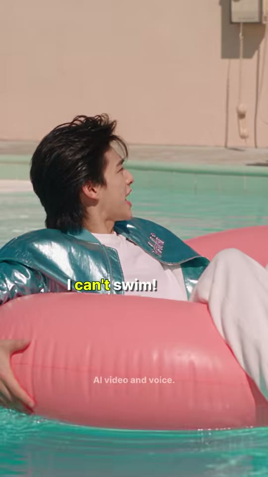

소년
핑크 튜브
벽걸이 전화
샷MS앵글아이레벨 측면(수면 높이)카메라고정구도풀 중앙에 뜬 튜브 속 소년(얼굴 x11~47%, y24~49%), 고개를 화면 오른쪽(컬리 소녀 쪽)으로 돌림. 배경 핑크 벽 우측에 벽걸이 전화와 늘어진 수화기. 튜브 y61~90%.동작깊은 물 한가운데서 겁먹은 채 오른쪽을 향해 '아이 캔트 스윔!' 따라 외침.대사소년: "I can't swim!"화면 자막"I can't swim!" 중 'can't' 노랑 (16.25~17.38, 세로 59%)들어오는 전환하드컷 — 정답 즉시 따라하기효과음/음악물 찰랑임역할반복 학습 1
1순위
minimax-h3대사 립싱크+음성 동시 생성, 무료 팀 기본
2순위
seedance-2-5원본 해시태그 #seedance25 — 동일 룩(추정)
3순위
kling-v3-omni레퍼런스 고정력 좋은 립싱크 대안
① 이미지 프롬프트 (원본 클론)photoreal cinematic live-action still, 9:16 vertical 608x1080, 1980s retro pastel aesthetic, bright hard midday California sun, high-key soft-contrast grading with lifted blacks, shot on 35-50mm full-frame lens, f/2.8, subtle film grain, Korean-drama beauty skin. Eye-level side medium shot at water level: a handsome East Asian young man about 19 with voluminous feathered dark-brown 80s mullet hair, wearing a shiny metallic teal satin bomber jacket with lilac 'vkki' embroidery on the chest, plain white T-shirt, baggy white track pants and white sneakers, sitting in a glossy pink inflatable ring in the middle of the turquoise pool, arm hugging the ring, turning his head to screen-right, anxious. Background: salmon-pink wall with a beige wall phone and its dangling receiver on the right.
② 영상 프롬프트 (원본 클론)Static camera, 1.2 seconds. Floating in the deep water, he turns toward the right and shouts the phrase clearly, slightly panicked but funny. Lip-sync, young male voice: "I can't swim!"
③ 동물 버전 이미지 프롬프트photoreal cinematic still of anthropomorphic animal actors, soft realistic fur, expressive large eyes, 9:16 vertical 608x1080, 1980s retro pastel aesthetic, bright hard midday California sun, high-key soft-contrast grading, 35-50mm lens f/2.8, subtle film grain, props scaled to animal size. Eye-level side medium shot at water level: Hamjji, an anthropomorphic golden Syrian hamster (orange-gold and white fur, round cheeks, tiny pink paws) wearing a shiny metallic teal satin bomber jacket with lilac 'vkki' embroidery, white T-shirt and baggy white track pants, hugging a glossy pink ring in the middle of the pool, turning his head to the right, anxious. Pink wall with a wall phone behind.
④ 동물 버전 영상 프롬프트Static camera, 1.2 seconds. The hamster clutches the ring, whiskers trembling, and shouts toward the right, lip-synced: "I can't swim!"
네거티브random text, subtitles, captions, letters on screen, watermark overlay, logo overlay, extra fingers, fused fingers, deformed hands, warped face, asymmetrical eyes, lip-sync drift, mouth moving without audio, flicker, morphing background, identity change between frames, duplicate characters, cartoon, anime, 3D render look, plastic skin, horizontal 16:9 frame, letterbox, smartphone, modern cars, overcast sky, night, winter, gloomy desaturated grading, drowning, panic, real danger | ANIMAL: human characters, human faces, human hands, realistic human skin, random text, subtitles, captions, letters on screen, watermark overlay, logo overlay, extra fingers, fused fingers, deformed hands, warped face, asymmetrical eyes, lip-sync drift, mouth moving without audio, flicker, morphing background, identity change between frames, duplicate characters, cartoon, anime, 3D render look, plastic skin, horizontal 16:9 frame, letterbox, smartphone, modern cars, overcast sky, night, winter, gloomy desaturated grading, drowning, panic, real danger, creepy uncanny animal, distorted snout, extra limbs, extra tails, wet matted fur, mismatched fur color between shots
컷 10 · 시청자 참여 퀴즈(빈칸)
17.38s → 18.29s (0.92s)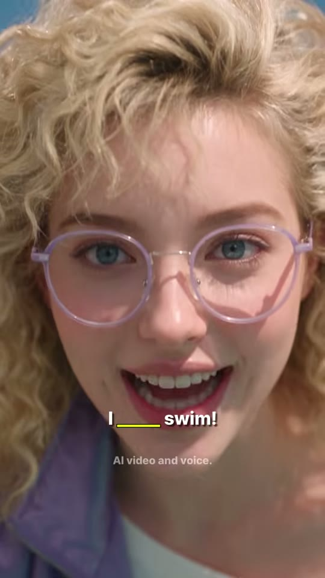
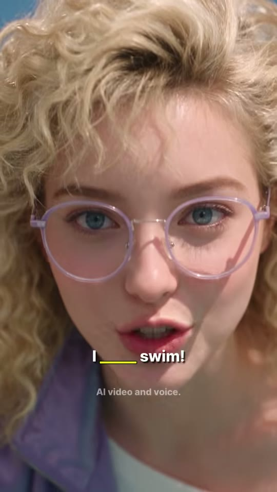
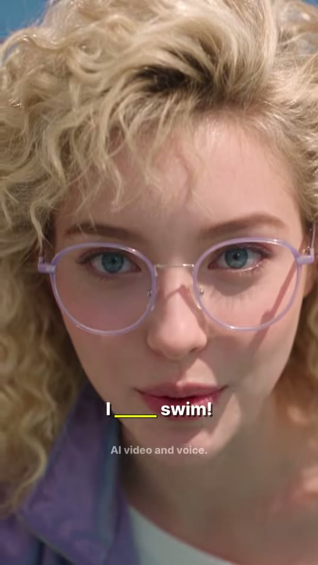
컬리 소녀 얼굴
샷ECU앵글정면(컷8 셋업)카메라고정구도컷8과 동일. 얼굴 풀프레임, 자막 입 아래 72%.동작웃으며 한 번 더 또박또박 코칭하듯 입 모양 → 입 다물며 미소.대사(추정) 컬리 소녀: "I can't swim!" 반복(자동자막 미검출, 오디오 RMS -20~-25dB로 음성 존재)화면 자막빈칸 퀴즈 "I ____ swim!" — 밑줄 노랑 (17.38~18.29)들어오는 전환하드컷 — 최단 컷(0.92초) 핑퐁효과음/음악없음역할시청자 참여 퀴즈(빈칸)
1순위
seedance-2-5원본 모델(추정) — 초근접 미세표정·눈 깜빡임
2순위
minimax-h3무료·오디오 포함 립싱크
3순위
kling-v3-omni얼굴 일관성+립싱크
① 이미지 프롬프트 (원본 클론)photoreal cinematic live-action still, 9:16 vertical 608x1080, 1980s retro pastel aesthetic, bright hard midday California sun, high-key soft-contrast grading with lifted blacks, shot on 35-50mm full-frame lens, f/2.8, subtle film grain, Korean-drama beauty skin. Extreme close-up, wide lens very close: face of a young European woman with huge voluminous curly platinum-blonde 80s perm hair, clear lilac round translucent-frame glasses, blue eyes, lilac-purple satin bomber jacket, white off-shoulder slouchy top, navy leggings, white slouch socks and white sneakers, filling the frame, encouraging smile, lips mid-word, lilac round glasses.
② 영상 프롬프트 (원본 클론)Static camera, 0.9 seconds. She repeats encouragingly with exaggerated mouth shapes, then closes her lips in a smile. Lip-sync: "I can't swim!"
③ 동물 버전 이미지 프롬프트photoreal cinematic still of anthropomorphic animal actors, soft realistic fur, expressive large eyes, 9:16 vertical 608x1080, 1980s retro pastel aesthetic, bright hard midday California sun, high-key soft-contrast grading, 35-50mm lens f/2.8, subtle film grain, props scaled to animal size. Extreme close-up: face of Coco, a cream-colored curly-coated Selkirk Rex cat with blue eyes and a fluffy curly mane, wearing clear lilac round glasses, a lilac satin bomber jacket, white off-shoulder top, navy leggings and white slouch socks, encouraging smile, lilac round glasses.
④ 동물 버전 영상 프롬프트Static camera, 0.9 seconds. The curly cat repeats encouragingly with exaggerated mouth shapes, lip-synced: "I can't swim!"
네거티브random text, subtitles, captions, letters on screen, watermark overlay, logo overlay, extra fingers, fused fingers, deformed hands, warped face, asymmetrical eyes, lip-sync drift, mouth moving without audio, flicker, morphing background, identity change between frames, duplicate characters, cartoon, anime, 3D render look, plastic skin, horizontal 16:9 frame, letterbox, smartphone, modern cars, overcast sky, night, winter, gloomy desaturated grading, drowning, panic, real danger | ANIMAL: human characters, human faces, human hands, realistic human skin, random text, subtitles, captions, letters on screen, watermark overlay, logo overlay, extra fingers, fused fingers, deformed hands, warped face, asymmetrical eyes, lip-sync drift, mouth moving without audio, flicker, morphing background, identity change between frames, duplicate characters, cartoon, anime, 3D render look, plastic skin, horizontal 16:9 frame, letterbox, smartphone, modern cars, overcast sky, night, winter, gloomy desaturated grading, drowning, panic, real danger, creepy uncanny animal, distorted snout, extra limbs, extra tails, wet matted fur, mismatched fur color between shots
컷 11 · 반복 학습 2 + 구조 요청
18.29s → 19.33s (1.04s)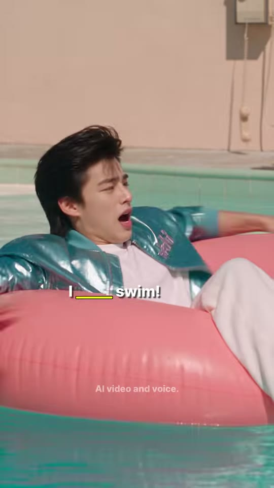
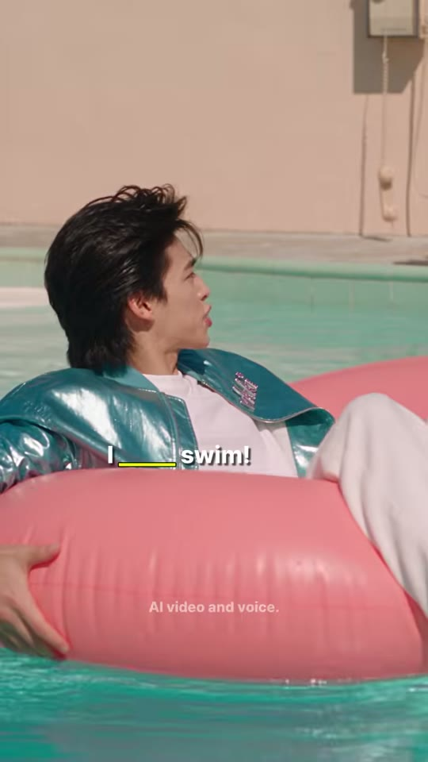

소년
핑크 튜브
샷MS앵글측면(컷9 셋업)카메라고정구도컷9와 동일. 소년 튜브, 고개 오른쪽.동작입을 크게 벌려 한 번 더 외치고(도와줘 톤) 오른쪽을 응시.대사(추정) 소년: "I can't swim!" 반복화면 자막빈칸 퀴즈 "I ____ swim!" (18.29~19.33, 세로 59%)들어오는 전환하드컷효과음/음악물 찰랑임역할반복 학습 2 + 구조 요청
1순위
minimax-h3대사 립싱크+음성 동시 생성, 무료 팀 기본
2순위
seedance-2-5원본 해시태그 #seedance25 — 동일 룩(추정)
3순위
kling-v3-omni레퍼런스 고정력 좋은 립싱크 대안
① 이미지 프롬프트 (원본 클론)photoreal cinematic live-action still, 9:16 vertical 608x1080, 1980s retro pastel aesthetic, bright hard midday California sun, high-key soft-contrast grading with lifted blacks, shot on 35-50mm full-frame lens, f/2.8, subtle film grain, Korean-drama beauty skin. Eye-level side medium shot at water level: a handsome East Asian young man about 19 with voluminous feathered dark-brown 80s mullet hair, wearing a shiny metallic teal satin bomber jacket with lilac 'vkki' embroidery on the chest, plain white T-shirt, baggy white track pants and white sneakers, in the pink ring mid-pool, mouth wide open shouting toward screen-right.
② 영상 프롬프트 (원본 클론)Static camera, 1.0 second. He shouts once more toward the edge, then holds his breath looking hopeful. Lip-sync: "I can't swim!"
③ 동물 버전 이미지 프롬프트photoreal cinematic still of anthropomorphic animal actors, soft realistic fur, expressive large eyes, 9:16 vertical 608x1080, 1980s retro pastel aesthetic, bright hard midday California sun, high-key soft-contrast grading, 35-50mm lens f/2.8, subtle film grain, props scaled to animal size. Eye-level side medium shot: Hamjji, an anthropomorphic golden Syrian hamster (orange-gold and white fur, round cheeks, tiny pink paws) wearing a shiny metallic teal satin bomber jacket with lilac 'vkki' embroidery, white T-shirt and baggy white track pants in the pink ring mid-pool, mouth wide open shouting to the right.
④ 동물 버전 영상 프롬프트Static camera, 1.0 second. The hamster shouts once more, cheeks puffed, lip-synced: "I can't swim!"
네거티브random text, subtitles, captions, letters on screen, watermark overlay, logo overlay, extra fingers, fused fingers, deformed hands, warped face, asymmetrical eyes, lip-sync drift, mouth moving without audio, flicker, morphing background, identity change between frames, duplicate characters, cartoon, anime, 3D render look, plastic skin, horizontal 16:9 frame, letterbox, smartphone, modern cars, overcast sky, night, winter, gloomy desaturated grading, drowning, panic, real danger | ANIMAL: human characters, human faces, human hands, realistic human skin, random text, subtitles, captions, letters on screen, watermark overlay, logo overlay, extra fingers, fused fingers, deformed hands, warped face, asymmetrical eyes, lip-sync drift, mouth moving without audio, flicker, morphing background, identity change between frames, duplicate characters, cartoon, anime, 3D render look, plastic skin, horizontal 16:9 frame, letterbox, smartphone, modern cars, overcast sky, night, winter, gloomy desaturated grading, drowning, panic, real danger, creepy uncanny animal, distorted snout, extra limbs, extra tails, wet matted fur, mismatched fur color between shots
컷 12 · 보상 — 올바른 문장이 즉시 구조로 연결(can't=능력 없음이 전달됨)
19.33s → 21.58s (2.25s)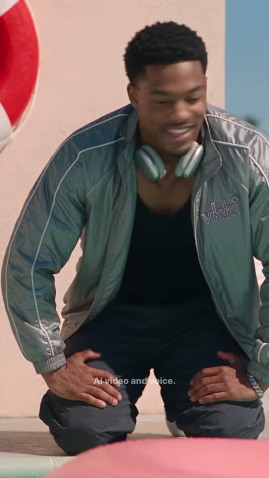
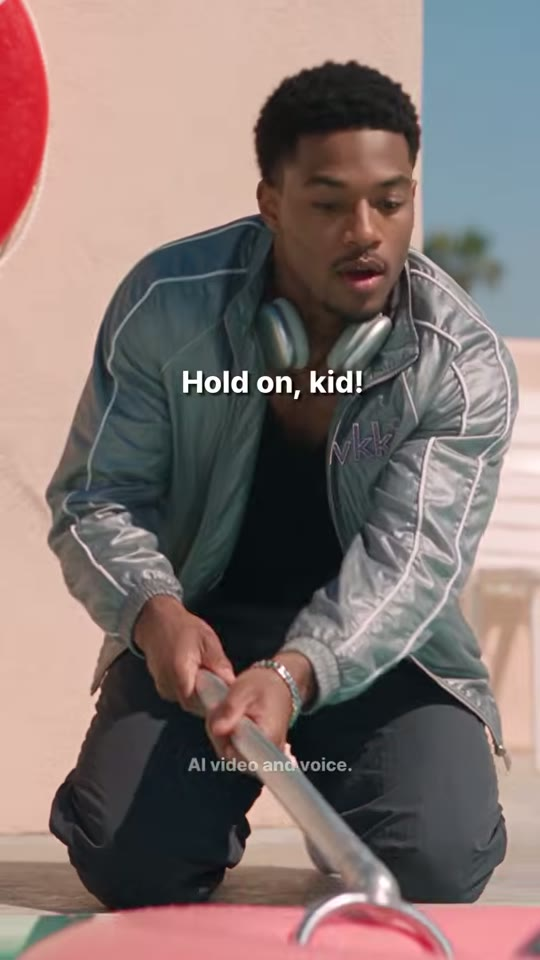

로키
구조봉 갈고리
튜브(전경)
샷MS앵글정면 아이레벨(약간 로우)카메라고정구도로키 중앙(얼굴 x45~78%, y4~27%) 풀 가장자리에 무릎 꿇음. 좌측 핑크 벽+구명튜브, 우측 파란 하늘+야자수. 하단 전경에 핑크 튜브 흐림, 긴 은색 풀 구조봉(갈고리)을 튜브 쪽으로 뻗음(x40~85%, y55~100%).동작웃다가 'Can't?!' 하며 눈 동그래짐(상황 파악) → 즉시 구조봉을 집어 들어 튜브 쪽으로 뻗으며 'Hold on, kid!'대사로키: "Can't?! Hold on, kid!"화면 자막"Can't?!" 중 'Can't' 노랑 (19.45~20.35, 세로 43.5%) → "Hold on, kid!" 흰색 (20.40~21.58, 세로 40%)들어오는 전환하드컷효과음/음악구조봉 금속 소리(추정), 물 튀김역할보상 — 올바른 문장이 즉시 구조로 연결(can't=능력 없음이 전달됨)
1순위
hailuo-2-3과장된 코믹 동작(수화기 던지기·튜브 밀기) 빠른 표현
2순위
seedance-2-5원본 모델(추정) + 대사 동시
3순위
minimax-h3립싱크 필요 시 무료 대안
① 이미지 프롬프트 (원본 클론)photoreal cinematic live-action still, 9:16 vertical 608x1080, 1980s retro pastel aesthetic, bright hard midday California sun, high-key soft-contrast grading with lifted blacks, shot on 35-50mm full-frame lens, f/2.8, subtle film grain, Korean-drama beauty skin. Frontal medium shot, slightly low angle: Rocky, a tall friendly Black young man in his early 20s with short curly black hair, wearing a silver-grey satin track jacket with white piping and lilac 'vkki' embroidery on the left chest, black tank top, silver over-ear headphones around his neck, charcoal track pants, silver bracelet, kneeling at the pool edge, surprised wide eyes, grabbing a long silver pool rescue hook pole and extending it toward the camera. Left: salmon-pink wall with a red-and-white life ring; right: blue sky and palm trees. Blurred pink float in the lower foreground.
② 영상 프롬프트 (원본 클론)Static camera, 2.25 seconds. His grin drops into surprise, he blurts the first line, then quickly grabs the silver hook pole and stretches it out over the water toward the float. Lip-sync, warm male voice, surprised then urgent-friendly: "Can't?! ...Hold on, kid!"
③ 동물 버전 이미지 프롬프트photoreal cinematic still of anthropomorphic animal actors, soft realistic fur, expressive large eyes, 9:16 vertical 608x1080, 1980s retro pastel aesthetic, bright hard midday California sun, high-key soft-contrast grading, 35-50mm lens f/2.8, subtle film grain, props scaled to animal size. Frontal medium shot, slightly low angle: Rocky, a big fluffy friendly orange Maine Coon cat with a broad chest and tufted ears, wearing a silver-grey satin track jacket with white piping and lilac 'vkki' embroidery, black tank top and silver over-ear headphones around his neck, kneeling at the pool edge with surprised wide eyes, grabbing a long silver pool hook pole with both paws and extending it forward. Pink wall with life ring on the left, blue sky and palms on the right, blurred pink float in the foreground.
④ 동물 버전 영상 프롬프트Static camera, 2.25 seconds. The Maine Coon's ears shoot up in surprise, then he grabs the hook pole and stretches it toward the float, lip-synced: "Can't?! ...Hold on, kid!"
네거티브random text, subtitles, captions, letters on screen, watermark overlay, logo overlay, extra fingers, fused fingers, deformed hands, warped face, asymmetrical eyes, lip-sync drift, mouth moving without audio, flicker, morphing background, identity change between frames, duplicate characters, cartoon, anime, 3D render look, plastic skin, horizontal 16:9 frame, letterbox, smartphone, modern cars, overcast sky, night, winter, gloomy desaturated grading, drowning, panic, real danger | ANIMAL: human characters, human faces, human hands, realistic human skin, random text, subtitles, captions, letters on screen, watermark overlay, logo overlay, extra fingers, fused fingers, deformed hands, warped face, asymmetrical eyes, lip-sync drift, mouth moving without audio, flicker, morphing background, identity change between frames, duplicate characters, cartoon, anime, 3D render look, plastic skin, horizontal 16:9 frame, letterbox, smartphone, modern cars, overcast sky, night, winter, gloomy desaturated grading, drowning, panic, real danger, creepy uncanny animal, distorted snout, extra limbs, extra tails, wet matted fur, mismatched fur color between shots
컷 13 · 반전 펀치라인 + 시리즈 시그니처 엔딩('That's what I meant' 고
21.58s → 23.06s (1.47s)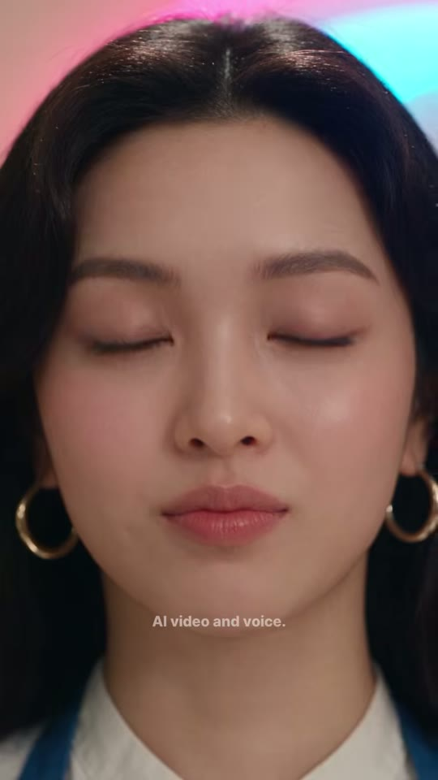
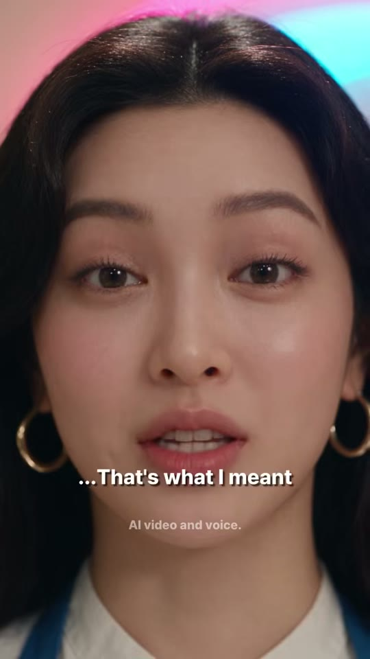
누나 얼굴
샷ECU앵글정면 아이레벨(완전 대칭)카메라고정구도누나 얼굴 정중앙 대칭 풀프레임, 머리 뒤로 핑크·시안 네온 글로우. 금색 큰 후프 귀걸이 양쪽 하단. 자막 입 아래 72%.동작눈을 감은 채 시작 → 천천히 눈을 뜨고 무표정하게 '…그게 내 말이었어' (오답 준 사람이 공 가로채기).대사누나: "...That's what I meant."화면 자막"...That's what I meant" 흰색, 하이라이트 없음 (21.95~23.06, 세로 72%)들어오는 전환하드컷 — 무관한 장소로 컷어웨이(반전 펀치라인)효과음/음악대사 후 하드 엔드(페이드 없음)역할반전 펀치라인 + 시리즈 시그니처 엔딩('That's what I meant' 고정 대사) → 루프
1순위
seedance-2-5원본 모델(추정) — 초근접 미세표정·눈 깜빡임
2순위
minimax-h3무료·오디오 포함 립싱크
3순위
kling-v3-omni얼굴 일관성+립싱크
① 이미지 프롬프트 (원본 클론)photoreal cinematic live-action still, 9:16 vertical 608x1080, 1980s retro pastel aesthetic, bright hard midday California sun, high-key soft-contrast grading with lifted blacks, shot on 35-50mm full-frame lens, f/2.8, subtle film grain, Korean-drama beauty skin, indoor with pink and cyan neon glow behind. Perfectly symmetrical frontal extreme close-up of Noona, an early-20s East Asian woman with long wavy black center-part hair and big gold hoop earrings, white short-sleeve collarless blouse under a royal-blue work apron with lilac 'vkki' embroidery, eyes closed, calm neutral face, big gold hoop earrings at the bottom corners, soft pink-cyan neon bloom behind her hair.
② 영상 프롬프트 (원본 클론)Static camera, 1.5 seconds. She slowly opens her eyes, looks straight into the lens and says deadpan, without smiling. Lip-sync, calm cool young female voice: "...That's what I meant."
③ 동물 버전 이미지 프롬프트photoreal cinematic still of anthropomorphic animal actors, soft realistic fur, expressive large eyes, 9:16 vertical 608x1080, 1980s retro pastel aesthetic, bright hard midday California sun, high-key soft-contrast grading, 35-50mm lens f/2.8, subtle film grain, props scaled to animal size, pink and cyan neon glow behind. Symmetrical frontal extreme close-up of Nabi-noona, an anthropomorphic long-haired black cat with amber eyes and big gold hoop earrings, wearing a white short-sleeve blouse under a royal-blue work apron with lilac 'vkki' embroidery, eyes closed, calm, gold hoop earrings.
④ 동물 버전 영상 프롬프트Static camera, 1.5 seconds. The black cat slowly opens her amber eyes and says deadpan into the lens, lip-synced: "...That's what I meant."
네거티브random text, subtitles, captions, letters on screen, watermark overlay, logo overlay, extra fingers, fused fingers, deformed hands, warped face, asymmetrical eyes, lip-sync drift, mouth moving without audio, flicker, morphing background, identity change between frames, duplicate characters, cartoon, anime, 3D render look, plastic skin, horizontal 16:9 frame, letterbox, smartphone, modern cars, overcast sky, night, winter, gloomy desaturated grading, drowning, panic, real danger | ANIMAL: human characters, human faces, human hands, realistic human skin, random text, subtitles, captions, letters on screen, watermark overlay, logo overlay, extra fingers, fused fingers, deformed hands, warped face, asymmetrical eyes, lip-sync drift, mouth moving without audio, flicker, morphing background, identity change between frames, duplicate characters, cartoon, anime, 3D render look, plastic skin, horizontal 16:9 frame, letterbox, smartphone, modern cars, overcast sky, night, winter, gloomy desaturated grading, drowning, panic, real danger, creepy uncanny animal, distorted snout, extra limbs, extra tails, wet matted fur, mismatched fur color between shots
✂️ 편집 키트
타임라인0.00 풀 와이드(무언 훅) → 1.63 소년 MS 전화 'what do I say?' → 5.42 누나 가게 MS 'Easy. I don't swim'(빨강) → 7.54 소년 수화기 던지며 'I don't swim!' → 9.38 로키 로우앵글 'Don't? Today you do!' → 10.92 와이드(튜브 밀려 깊은 곳으로, 컬리 달려옴) → 13.42 컬리 엎드려 'Say—' → 14.92 컬리 ECU(무음 0.43초 후) 'I can't swim!'(노랑) → 16.17 소년 따라하기 → 17.38 컬리 빈칸 → 18.29 소년 빈칸 → 19.33 로키 'Can't?! Hold on, kid!' 구조봉 → 21.58 누나 대칭 ECU 'That's what I meant' → 23.06 하드 엔드
FFmpeg 명령# === 준비: shots/s01.mp4~s13.mp4 / amb.wav(풀 앰비언스: 물 찰랑임·먼 새소리) / (선택) bgm.mp3 / subs.ass / fonts/Montserrat-ExtraBold.ttf ===
# 원본은 BGM이 없는 것으로 추정(0.46~1.72초 RMS -46dB 무음). 1:1 클론은 amb.wav만, 리메이크는 bgm.mp3 추가
mkdir -p trim
for pair in s01:1.625 s02:3.792 s03:2.125 s04:1.833 s05:1.542 s06:2.500 s07:1.500 s08:1.250 s09:1.208 s10:0.917 s11:1.041 s12:2.250 s13:1.474; do
n=${pair%%:*}; d=${pair##*:}
ffmpeg -y -nostdin -i shots/$n.mp4 -t $d -vf "scale=608:1080:force_original_aspect_ratio=increase,crop=608:1080,fps=24,setsar=1,format=yuv420p" -af "aresample=44100,aformat=channel_layouts=stereo,apad" -t $d -c:v libx264 -crf 16 -preset slow -c:a aac -b:a 192k trim/$n.mp4
done
# 무음 비트 재현: s01 대사 제거(0.46초 이후 무음), s08 첫 0.43초 무음
ffmpeg -y -nostdin -i trim/s01.mp4 -c:v copy -af "volume=enable='gt(t,0.46)':volume=0" -c:a aac -b:a 192k trim/s01_m.mp4 && mv trim/s01_m.mp4 trim/s01.mp4
ffmpeg -y -nostdin -i trim/s08.mp4 -c:v copy -af "volume=enable='lt(t,0.43)':volume=0" -c:a aac -b:a 192k trim/s08_m.mp4 && mv trim/s08_m.mp4 trim/s08.mp4
printf "file '%s'\n" s01.mp4 s02.mp4 s03.mp4 s04.mp4 s05.mp4 s06.mp4 s07.mp4 s08.mp4 s09.mp4 s10.mp4 s11.mp4 s12.mp4 s13.mp4 > trim/list.txt
ffmpeg -y -nostdin -f concat -safe 0 -i trim/list.txt -c copy joined.mp4
# 자막 + 앰비언스(대사에 덕킹) + (선택)BGM 덕킹 + 라우드니스. 원본 그대로면 I=-21, 업로드 권장 -14
ffmpeg -y -nostdin -i joined.mp4 -stream_loop -1 -i amb.wav -stream_loop -1 -i bgm.mp3 -filter_complex "[0:v]subtitles=subs.ass:fontsdir=fonts[v];[0:a]asplit=2[dlg][key];[1:a]atrim=0:23.057,asetpts=PTS-STARTPTS,volume=0.25[amb];[2:a]atrim=0:23.057,asetpts=PTS-STARTPTS,volume=0.18,afade=t=out:st=21.4:d=0.5[bgm];[amb][bgm]amix=inputs=2:normalize=0[bed];[bed][key]sidechaincompress=threshold=0.02:ratio=8:attack=15:release=300[duck];[dlg][duck]amix=inputs=2:duration=first:normalize=0,loudnorm=I=-14:TP=-1.5:LRA=9[a]" -map "[v]" -map "[a]" -t 23.057 -r 24 -c:v libx264 -crf 17 -preset slow -pix_fmt yuv420p -c:a aac -b:a 192k -movflags +faststart final_vk_lU7oJdINuFE.mp4
# (BGM 없이 1:1 클론) 위 명령에서 -stream_loop -1 -i bgm.mp3 제거, [2:a]... 체인 제거, [amb]를 바로 [bed]로 사용
ffprobe -v error -show_entries format=duration:stream=width,height,r_frame_rate -of compact final_vk_lU7oJdINuFE.mp4
ffmpeg -nostdin -i final_vk_lU7oJdINuFE.mp4 -af ebur128 -f null - 2>&1 | tail -12
ASS 자막 스타일[Script Info]
ScriptType: v4.00+
PlayResX: 608
PlayResY: 1080
WrapStyle: 2
ScaledBorderAndShadow: yes
[V4+ Styles]
Format: Name, Fontname, Fontsize, PrimaryColour, SecondaryColour, OutlineColour, BackColour, Bold, Italic, Underline, StrikeOut, ScaleX, ScaleY, Spacing, Angle, BorderStyle, Outline, Shadow, Alignment, MarginL, MarginR, MarginV, Encoding
Style: Cap,Montserrat ExtraBold,38,&H00FFFFFF,&H00FFFFFF,&H00202020,&H90000000,-1,0,0,0,100,100,0,0,1,1.4,2,5,20,20,0,1
Style: Disc,Montserrat SemiBold,14,&H4DFFFFFF,&H4DFFFFFF,&H00000000,&H00000000,0,0,0,0,100,100,0,0,1,0,0,5,0,0,0,1
[Events]
Format: Layer, Start, End, Style, Name, MarginL, MarginR, MarginV, Effect, Text
Dialogue: 0,0:00:00.00,0:00:23.06,Disc,,0,0,0,,{\pos(304,858)}AI video and voice.
Dialogue: 1,0:00:01.85,0:00:02.45,Cap,Boy,0,0,0,,{\pos(304,611)}Noona —
Dialogue: 1,0:00:02.95,0:00:04.45,Cap,Boy,0,0,0,,{\pos(304,611)}Rocky wants me in the pool...
Dialogue: 1,0:00:04.50,0:00:05.41,Cap,Boy,0,0,0,,{\pos(304,611)}what do I say?
Dialogue: 1,0:00:05.45,0:00:06.20,Cap,Noona,0,0,0,,{\pos(304,428)}Easy...
Dialogue: 1,0:00:06.25,0:00:07.54,Cap,Noona,0,0,0,,{\pos(304,426)}'I {\c&H2008D4&}don't{\c&HFFFFFF&} swim'
Dialogue: 1,0:00:07.60,0:00:09.37,Cap,Boy,0,0,0,,{\pos(304,608)}I {\c&H2008D4&}don't{\c&HFFFFFF&} swim!
Dialogue: 1,0:00:09.45,0:00:09.95,Cap,Rocky,0,0,0,,{\pos(304,386)}{\c&H2008D4&}Don't{\c&HFFFFFF&}?
Dialogue: 1,0:00:09.98,0:00:10.91,Cap,Rocky,0,0,0,,{\pos(304,416)}Today you do!
Dialogue: 1,0:00:14.35,0:00:14.91,Cap,Curly,0,0,0,,{\pos(304,350)}Say —
Dialogue: 1,0:00:15.45,0:00:16.16,Cap,Curly,0,0,0,,{\pos(304,778)}I {\c&H20F8F0&}can't{\c&HFFFFFF&} swim!
Dialogue: 1,0:00:16.25,0:00:17.37,Cap,Boy,0,0,0,,{\pos(304,640)}I {\c&H20F8F0&}can't{\c&HFFFFFF&} swim!
Dialogue: 1,0:00:17.38,0:00:18.29,Cap,Curly,0,0,0,,{\pos(304,778)}I {\c&H20F8F0&}____{\c&HFFFFFF&} swim!
Dialogue: 1,0:00:18.29,0:00:19.33,Cap,Boy,0,0,0,,{\pos(304,640)}I {\c&H20F8F0&}____{\c&HFFFFFF&} swim!
Dialogue: 1,0:00:19.45,0:00:20.35,Cap,Rocky,0,0,0,,{\pos(304,470)}{\c&H20F8F0&}Can't{\c&HFFFFFF&}?!
Dialogue: 1,0:00:20.40,0:00:21.58,Cap,Rocky,0,0,0,,{\pos(304,432)}Hold on, kid!
Dialogue: 1,0:00:21.95,0:00:23.05,Cap,Noona,0,0,0,,{\pos(304,781)}...That's what I meant
HyperFrames 편집 프롬프트 (Claude에 그대로 붙여넣기)HyperFrames로 9:16(608x1080, 24fps) 23.057초 쇼츠를 편집해줘. 입력: shots/s01~s13.mp4, amb.wav(풀 앰비언스), 선택 bgm.mp3. 전환은 전부 하드컷(페이드·xfade 금지), 엔딩도 페이드 없이 23057ms에서 종료. 컷 타이밍(ms): s01 0~1625 / s02 1625~5417 / s03 5417~7542 / s04 7542~9375 / s05 9375~10917 / s06 10917~13417 / s07 13417~14917 / s08 14917~16167 / s09 16167~17375 / s10 17375~18292 / s11 18292~19333 / s12 19333~21583 / s13 21583~23057. 자막: Montserrat ExtraBold 38px 흰색, 외곽선 1.4px 어두운 회색 + 그림자 2px, 가로 중앙, 세로 위치는 컷마다 말하는 사람 입/턱 바로 아래로 이동(애니메이션 없이 팝 표시). 오답 단어는 빨강 #D40820, 정답 단어는 노랑 #F0F820. 자막 이벤트(ms, 세로 %): 1850~2450 'Noona —' 56.5% / 2950~4450 'Rocky wants me in the pool...' 56.5% / 4500~5417 'what do I say?' 56.5% / 5450~6200 'Easy...' 39.5% / 6250~7542 "'I don't swim'"(don't 빨강) 39.5% / 7600~9375 'I don't swim!'(don't 빨강) 56% / 9450~9950 "Don't?"(Don't 빨강) 36% / 9980~10917 'Today you do!' 38.5% / 14350~14917 'Say —' 32.5% / 15450~16167 "I can't swim!"(can't 노랑) 72% / 16250~17375 같은 문장 59% / 17375~18292 'I ____ swim!'(밑줄 노랑) 72% / 18292~19333 같은 빈칸 59% / 19450~20350 "Can't?!"(Can't 노랑) 43.5% / 20400~21583 'Hold on, kid!' 40% / 21950~23057 "...That's what I meant" 72%. 상시 레이어: 'AI video and voice.' 14px 흰색 불투명도 70%, 가로 중앙, 세로 79.5%. 오디오: 클립 대사 유지, s01의 460ms 이후와 s08의 첫 430ms는 무음 처리(원본 정적 비트 재현). 앰비언스 25%·선택 BGM 18%를 대사에 사이드체인 덕킹(attack 15ms, release 300ms), 전체 -14 LUFS / TP -1.5(원본 동일 레벨은 -21 LUFS).
✅ 똑같이 만들기 체크리스트
- 컷 13개 길이를 ms 단위 그대로 — 특히 퀴즈 구간 1.25/1.21/0.92/1.04초 핑퐁
- 자막 색 규칙: 오답 don't=빨강 #D40820, 정답 can't=노랑 #F0F820, 빈칸 밑줄도 노랑. 색을 섞지 말 것
- 자막 세로 위치를 컷마다 화자 입 아래로 이동(32~72%) — 고정 위치로 두면 원본 느낌이 안 남
- 무음 3곳(0.46~1.72 / 7.17~7.65 / 14.92~15.35) 유지, BGM 넣지 않기(1:1 클론 기준)
- 80s 파스텔 팔레트와 의상 소재(메탈릭 새틴 재킷·라일락 안경·곱슬 펌)와 'vkki' 라일락 자수 3곳 고정 — 캐릭터 시트 레퍼런스 image2image 필수
- 벽걸이 전화기+긴 코일 코드 소품을 컷2·4·9 배경에 연속 유지(수화기 던진 뒤엔 매달린 상태)
- 컷1과 컷6은 같은 와이드 셋업(수면 높이 고정 카메라)으로 촬영해 '밀려나감' 비교가 되게
- ECU(컷8·10·13)는 광각 초근접 정면, 컷13은 완전 대칭 + 네온 역광
- 엔딩 페이드 없이 하드 엔드, 마지막 대사 '...That's what I meant' 고정(채널 시그니처)
🐹 동물 버전 기획소년 → 황금 햄스터 '햄찌'(틸 새틴 재킷·흰 바지, EP.2 햄찌와 동일 얼굴/털색), 로키 → 크고 푸근한 오렌지 메인쿤 고양이 '로키'(은색 트랙재킷·헤드폰), 컬리 소녀 → 곱슬털 크림색 셀커크 렉스 고양이 '코코'(라일락 안경·라일락 재킷 — 곱슬 펌 머리를 곱슬 털로 치환), 누나 → EP.2와 같은 긴 털 검은 고양이 '나비 누나'(파란 앞치마·금색 후프)로 채널 전체 캐스트 통일. 세트·구도·조명·컷 타이밍·자막 색 규칙·무음 비트·대사는 그대로. 바꾸는 것: 소품 스케일(튜브·전화기·구조봉을 동물 크기로), 손 제스처→앞발, 햄찌 볼 부풀림·수염 떨림, 메인쿤 꼬리 흔들기 같은 동물 리액션 추가. 물은 털이 젖지 않게 튜브 위에만 있도록 연출(네거티브에 wet matted fur). 먼저 4종 캐릭터 시트 → 모든 컷 레퍼런스 image2image → 영상 생성.
전체 프레임 시트 보기 (타임코드 포함)
전체 흐름
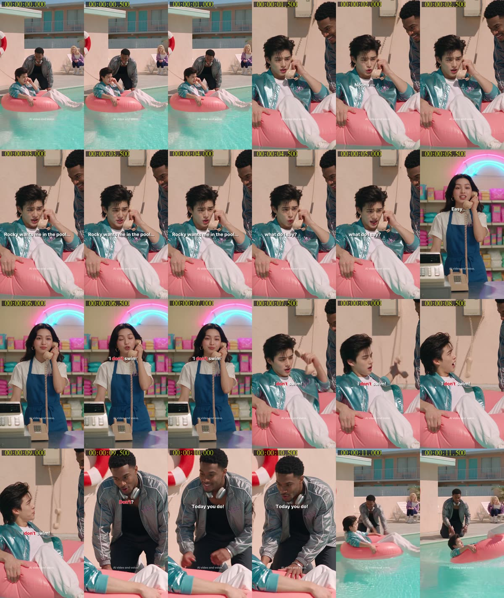
전체 흐름